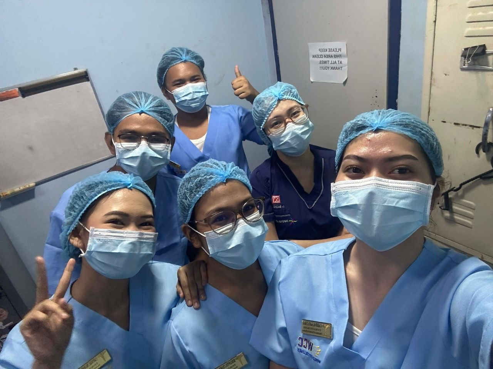
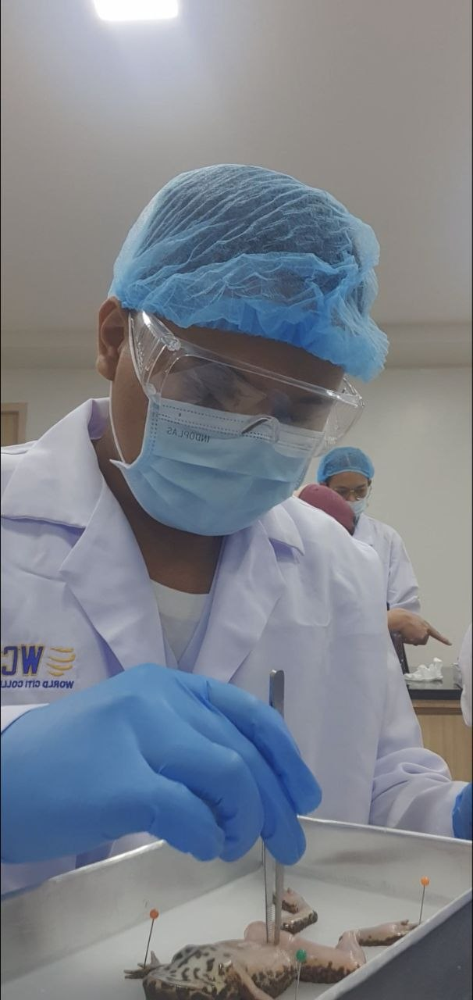
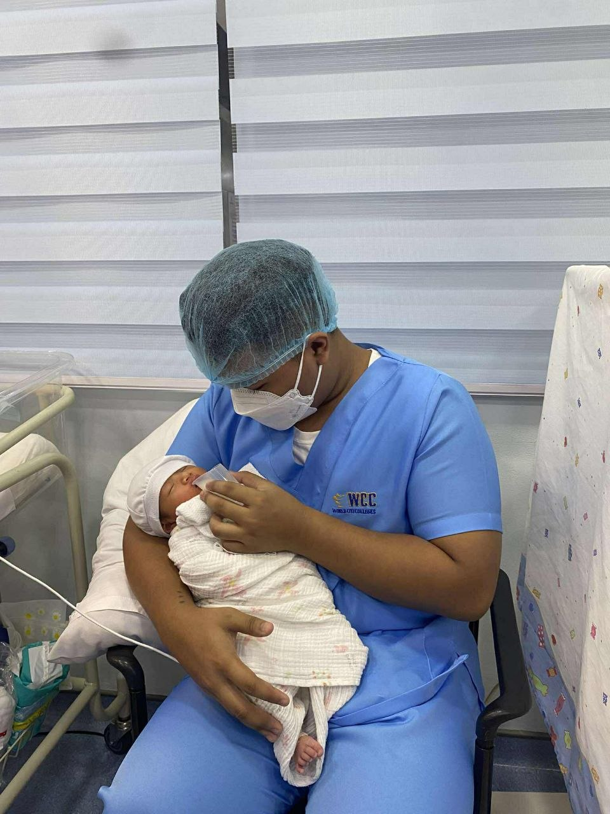
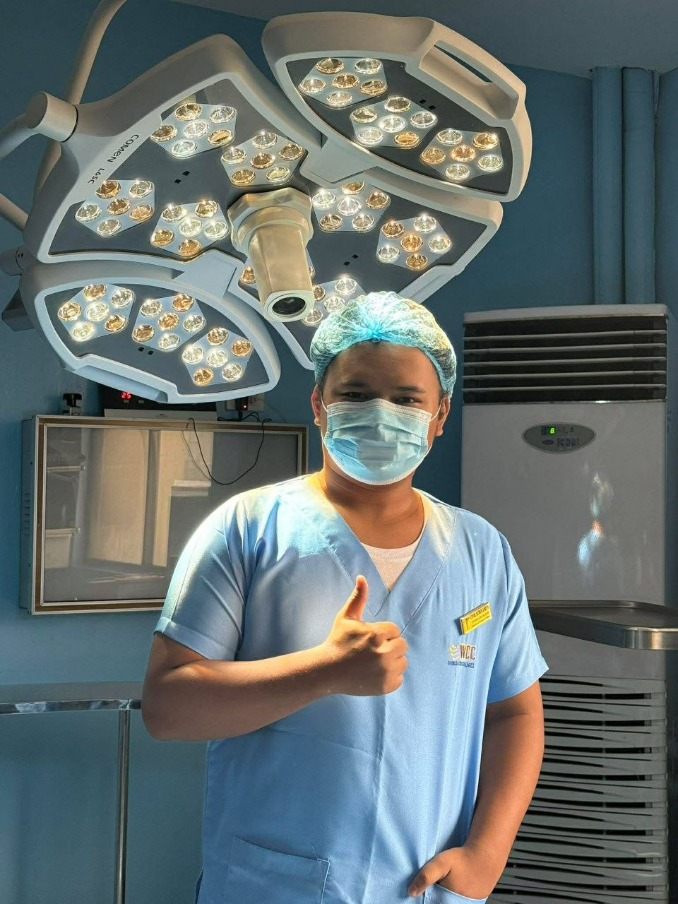

2nd Year Nursing Student
Based in Quezon City, Philippines
Introduction
Hello! I'm Patrick James M. Conde, but you may call me PJ. I'm a 2nd year nursing student currently studying at World Citi Colleges. I'll do my best in improving my skill and practicing my values for the sake of the patients I'll handle in the future.
Get In Touch
Expertise
Communication
Academic Background
World Citi Colleges
Bachelor of Science in Nursing
2nd Year Nursing Student
Quirino High School
Senior High School — ICT Strand
Clinical Training
Career
Personal



